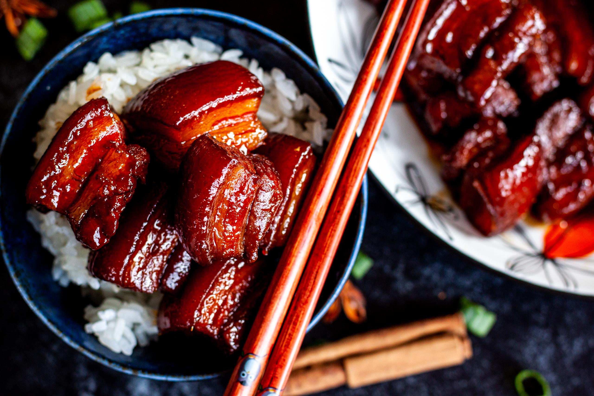

Braised Pork Belly
Ingredients
- 12 ounces lean, skin-on pork belly
- 2 tablespoons oil
- 1 tablespoon rock sugar
- 3 tablespoons Shaoxing wine
- 1 tablespoon soy sauce
- ½ tablespoon dark soy sauce
- 2 cups water
How to Make this Shanghai-Style Braised Pork Belly
-
Start by cutting your pork belly into 3/4-inch thick pieces.
-
Bring a pot of water to a boil. Blanch the pork belly pieces for a couple minutes.
This gets rid of impurities and starts the cooking process. Take the pork out of the pot, rinse, and set aside.
-
Over low heat, add the oil and sugar to your wok. Melt the sugar slightly and add the pork.
Raise the heat to medium and cook until the pork is lightly browned.
-
Turn the heat back down to low and add shaoxing cooking wine, regular soy sauce, dark soy sauce, and water.
-
NOTE: It’s very important to the color and flavor of this dish that you have both kinds of soy sauce!
Just head to your local Asian market, buy a bottle of each!
-
Cover and simmer over medium heat for about 45 minutes to 1 hour until pork is fork tender.
Every 5-10 minutes, stir to prevent burning and add more water if it gets too dry.
-
Once the pork is fork tender, if there is still a lot of visible liquid, uncover the wok,
turn up the heat, and stir continuously until the sauce has reduced to a glistening coating.